set.seed(123)
tempo <- seq(0, 10, length.out = 30)
y <- 100 * exp(-0.22 * tempo) + rnorm(30, 0, 3)
dados_exp <- data.frame(tempo, y)
plot(y~tempo)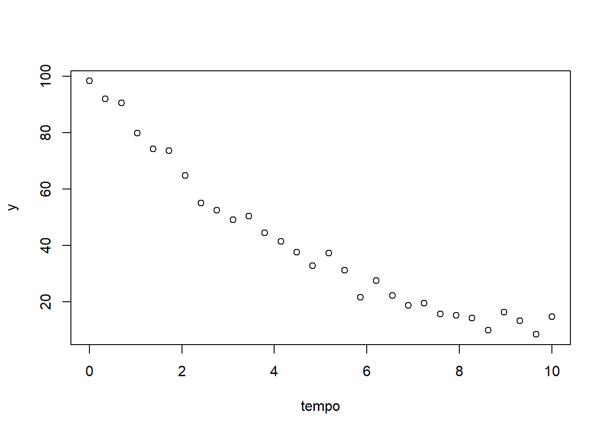
GED-16 / PO-216: Análise de Regressão
O termo regressão é usado para designar a expressão de uma variável dependente \(Y\) em função de outras \(\mathbf X\), consideradas independentes.
Considere, de forma geral,
\[ Y_i\mid\mathbf{x}_i = \eta(\mathbf{x}_i,\boldsymbol{\theta})+\varepsilon_i, \qquad i=1,\ldots,n, \]
em que:
No caso clássico de regressão, assume-se frequentemente
\[ \varepsilon_i \overset{iid}{\sim} N(0,\sigma^2), \]
de modo que
\[ E(Y_i\mid\mathbf{x}_i)=\eta(\mathbf{x}_i,\boldsymbol{\theta}). \]
A Figura 1.1 apresenta, de forma esquemática, essa relação entre \(X\) e a distribuição condicional de \(Y\). A relação impõe que qualquer \(Y_i\) possui distribuição gaussiana, com mesma variância e, média que depende do respectivo \(x_i\) pela relação \[E[Y_i|x_i] = \mu_i = \beta_0 + \beta_1 x_i.\]
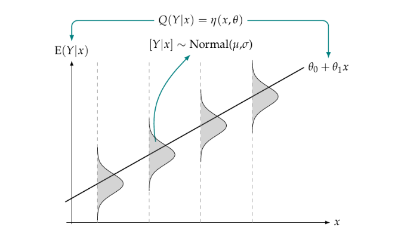
Nesse caso, temos uma regressão linear, caracterizada por pressupor uma distribuição gaussiana com homocedasticidade, ligação identidade com a E[Y|x] e função linear dos parâmetros.
Contudo, cada uma dessas premissas pode ser ajustada na formulação de modelos alternativos. Em muitos problemas de regressão, por exemplo, a relação entre a variável resposta e as variáveis explicativas não pode ser representada adequadamente por uma combinação linear dos parâmetros. Nesses casos, possíveis alternativas envolvem adotar:
uma estrutura polinomial, tal como uma forma quadrática \(\mu_i = \beta_0 + \beta_1 x_i + \beta_2 x_i^2\);
uma função de ligação não linear, tal como \(\mu_i = e^{(\beta_0 + \beta_1 x_i)}\); ou
uma estrutura intrinsicamente não linear.
Um modelo é linear nos parâmetros quando pode ser escrito como \[ E(Y_i\mid\mathbf{x}_i) = \beta_0+\beta_1x_{i1}+\cdots+\beta_px_{ip}. \] Já em um modelo não linear, os parâmetros aparecem dentro de funções como exponenciais, potências, razões ou outras estruturas não lineares. Por exemplo,
\[ E(Y_i\mid x_i) = \frac{\alpha x_i}{\beta + x_i} \]
é não linear nos parâmetros \(V_{\max}\) e \(K_m\).
É importante observar que “não linear” se refere, nesse contexto, principalmente à forma como os parâmetros aparecem no modelo, e não simplesmente ao fato de a curva observada não ser uma reta.
Os modelos de regressão não linear são frequentemente utilizados para descrever relações entre uma resposta contínua e uma ou mais variáveis explicativas quando a função da média não é linear nos parâmetros. Por exemplo, situções que podem representar o crescimento de um indivíduo em função da idade, a concentração de um fármaco no organismo ao longo do tempo ou a resposta de um material à variação de temperatura.
Para esse tipo de situações, a distribuição Gaussiana representa bem o comportamento da resposta, embora outras distribuições possam ser mais apropriadas dependendo da natureza dos dados e das hipóteses adotadas para o modelo.
Por definição, um modelo é considerado não linear quando pelo menos uma das derivadas parciais do vetor de valores esperados \(\eta\) em relação aos parâmetros \(\boldsymbol{\theta}\) depende explicitamente desses mesmos parâmetros.
Considere dois modelos e suas derivadas em relação aos seus respectivos parâmetros, conforme Tabela 2.1.
| Modelo Polinomial Quadrático | Modelo de Decaimento Exponencial |
|---|---|
| \[\eta(x, \boldsymbol{\beta}) = \beta_0 + \beta_1 x + \beta_2 x^2\] | \[ \eta(t, \boldsymbol{\beta}) = \beta_0 e^{−\beta_1 X} \tag{2.1}\] |
| \(\dfrac{\partial \eta}{\partial \beta_0} = 1\) \(\dfrac{\partial \eta}{\partial \beta_1} = x\) \(\dfrac{\partial \eta}{\partial \beta_2} = x^2\) Apenas constantes e variáveis conhecidas, livres de parâmetros |
\(\dfrac{\partial \eta}{\partial \beta_0} = e^{-\beta_1 x}\) \(\dfrac{\partial \eta}{\partial \beta_1} = -\beta_0 X e^{-\beta_1 X}\)$ Envolvem os parâmetros estruturais do modelo |
O Modelo Linear Quadrático é definido como sendo um modelo linear nos parâmetros, pois ao avaliar as derivadas parciais para sua equação, observa-se que nenhuma delas envolve os parâmetros do modelo, contendo apenas quantidades conhecidas (\(1\), \(x\) e \(x^2\)). Por outro lado, ao analisar as derivadas parciais para a equação da direita, nota-se que os resultados das derivadas envolvem parâmetros estruturais do modelo. Portanto, conclui-se que o Modelo Exponencial Assintótico caracteriza um modelo não linear.
A literatura estatística também contempla classificações intermediárias. Um modelo é dito linearizável se puder ser transformado em um modelo linear por meio de uma transformação matemática ou reparametrização adequada. Um exemplo clássico é a função:
\[ \eta(x, \boldsymbol{\theta}) = e^{(\theta_0 + \theta_1 x)}\]
que, ao se aplicar a transformação logarítmica, assume a representação linear: \[log(\eta(x, \boldsymbol{\theta})) = \theta_0 + \theta_1 x.\]
Em contrapartida, os modelos que não podem ser transformados em modelos lineares por meio de nenhuma manipulação algébrica ou mudança de escala (como aplicação de logaritmos, inversas ou raízes) são classificados como intrinsicamente não lineares. Um exemplo é a Equação 2.1 ou curvas de crescimento complexas (como o modelo logístico ou de Gompertz, que veremos mais à frente).
Uma classificação útil dos MNL é quanto ao número de parâmetros que ocorrem de forma linear. Nota-se que nas derivadas parciais da Equação 2.1, a derivada referente a \(\theta_a\) não depende de \(\theta_a\). O mesmo comportamento, contudo, não se repete para os demais parâmetros. Por essa razão, define-se que o modelo é parcialmente linear em \(\theta_a\), visto que, ao fixar os demais parâmetros como constantes conhecidas, a estrutura reduz-se a um modelo linear.
A Figura 2.1 apresenta, de forma esquemática, a relação não-linear entre X e a distribuição condicional de 𝑌. A relação impõe que:
qualquer \(Y_i\) possui distribuição gaussiana, com variância constante, \(Y_i|x_i \sim N(\mu_i,\sigma^2)\);
a relação entre os parâmetros não é liner, \(E[Y_i|x_i] = \mu_i= g(\beta_0,\beta_1,x_i) = \frac{\theta_a x}{\theta_v + x_i}.\)
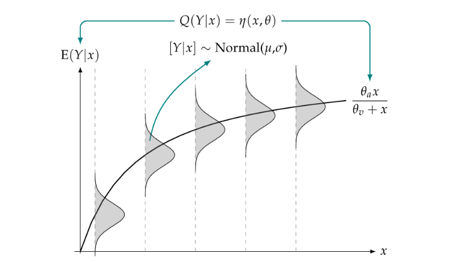
O modelo apresentado, \(\frac{\theta_a x}{\theta_v + x_i}\), pode ser dito um modelo não-linear gaussiano de \(Y\) como função de \(x\) ou, equivalentemente, um modelo linear generalizado com distribuição gaussiana, função de ligação inversa \(\mu_i= (\beta_0 + \beta_1 x_i^{∗})^{-1}\) (em que \(\beta_0 = 1/\theta_a\) e \(\beta_1 = \theta_v/\theta_a\)) e covariável \(x^*=1/x\). A principal diferença em relação ao modelo linear está na forma como os parâmetros entram na função média.
Outros dois casos de modelos não-lineares são apresentados a seguir. Na Figura 2.2 (a) tem-se que a variância de Y se altera para diferentes valores de x, segundo uma função que depende dos valores de x.
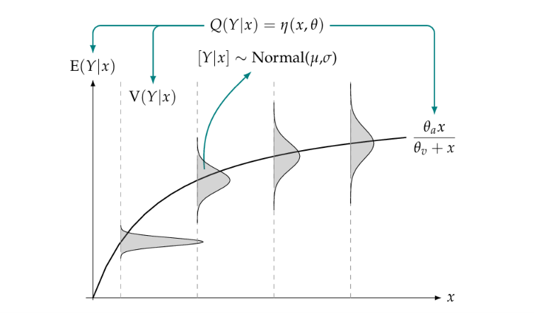
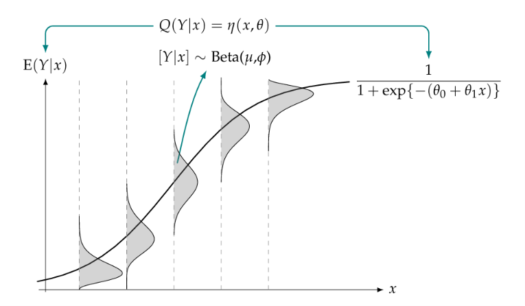
Já o modelo apresentado na Figura 2.2 (b) se enquadra na classe dos GLMs, mas pode ser alternativamente formulado como um modelo beta não linear de regressão, visto que a esperança condicional \(E[Y|x]\) associa-se a \(x\) por meio de uma função não linear dos coeficientes do vetor \(\beta\). Sob a suposição de que \(Y\) obedece a uma distribuição beta, os desvios resultantes exibem comportamento heterocedástico e graus de assimetria que oscilam conforme o valor de \(x\).
A utilização de um modelo não linear (MNL) é particularmente apropriada quando há conhecimento prévio, teórico ou empírico, que sustenta uma forma funcional específica para a relação entre a variável resposta e as variáveis explicativas. Nesses casos, a escolha do modelo não se baseia apenas na capacidade de ajuste aos dados, mas também em uma estrutura que procura representar o comportamento esperado do fenômeno.
Em aplicações de Engenharia Aeronáutica, por exemplo, relações de crescimento, decaimento, saturação, resposta a uma concentração ou dose, aprendizagem e aproximação a limites podem surgir em diferentes contextos:
Este material está em construção, com adaptações para aplicações na área aeronáutica.
Conteúdos, exemplos e interpretações ainda estão sendo revisados; contribuições são bem-vindas.
| Fenômeno | Possível aplicação |
|---|---|
| Crescimento ou decaimento | Resistência de selantes de tanques de combustível ao longo do tempo de ensaio |
| Saturação | Absorção de umidade por materiais compósitos em função do tempo |
| Dose–resposta | Efetividade de tratamentos superficiais em ligas metálicas em função da concentração de eletrólito |
| Crescimento acumulado | Complexidade de software embarcado ao longo das gerações de projetos de aeronaves |
| Cinética química | Grau de polimerização de resinas epóxi em função do tempo de ciclo em autoclave |
| Relação concentração–resposta | Sinal elétrico de sensores de oxigênio em função da concentração do gás |
| Crescimento com estabilização | Deformação acumulada de componentes metálicos em função do número de ciclos de ensaio |
| Aproximação a um limite | Eficiência volumétrica de compressores de turbofans em função da altitude de voo |
| Aprendizagem | Tempo de montagem de subconjuntos de asas em função do número acumulado de unidades produzidas |
Nessas situações (Tabela 2.2), uma função não linear pode representar diretamente a forma esperada da relação, e seus parâmetros ou funções deles podem assumir interpretação prática. Além disso, quando a estrutura escolhida é adequada, o modelo pode oferecer uma representação parcimoniosa do fenômeno, isto é, até mesmo comportamentos complexos podem ser descritos por um número relativamente pequeno de parâmetros com significado próprio.
Os MNL apresentam algumas características que os distinguem de uma representação linear puramente empírica:
Essas características também impõem limitações. A estimação dos parâmetros geralmente é feita por procedimentos iterativos, que podem depender de valores iniciais e apresentar dificuldades de convergência. Além disso, resultados inferenciais podem depender de aproximações assintóticas, especialmente em amostras pequenas. A especificação do modelo também exige conhecimento suficiente sobre o fenômeno para que a forma funcional escolhida seja plausível.
O uso de um MNL é especialmente interessante quando existe uma razão para acreditar que a relação entre as variáveis possui uma estrutura funcional específica.
\[ \boxed{ \text{conhecimento sobre o fenômeno} \;\longrightarrow\; \text{forma funcional} \;\longrightarrow\; \text{parâmetros interpretáveis} } \] O objetivo, portanto, não é simplesmente substituir um modelo linear por uma curva mais flexível, mas utilizar uma estrutura não linear quando ela oferece uma representação adequada e cientificamente interpretável do fenômeno.
Os modelos não lineares podem assumir diferentes formas funcionais, escolhidas de acordo com o comportamento esperado da relação entre a variável resposta e as variáveis explicativas. A escolha de uma determinada forma funcional requer, entretanto, a compreensão do significado prático dos seus parâmetros e de como eles se relacionam com o fenômeno investigado. A seguir, são apresentados alguns modelos usuais, destacando-se sua forma, a interpretação dos parâmetros e os tipos de fenômenos que podem representar.
Um dos modelos não lineares mais simples é o modelo exponencial. Sua expressão simplificada é dada por:
\[ Y_i=\alpha e^{\beta x_i}+\epsilon_i, \]
em que, \(i=1,2,\ldots,n\);
\(Y_i\) é a \(i\)-ésima observação da variável dependente;
\(x_i\) é a \(i\)-ésima observação da variável independente;
\(\alpha\) é o valor esperado da variável resposta quando \(x_i=0\);
\(\beta\) é o parâmetro associado à taxa de crescimento ou decaimento exponencial, sendo que \(\beta>0\) caracteriza crescimento e \(\beta<0\), decaimento;
\(\epsilon_i\) é o erro aleatório associado à \(i\)-ésima observação, sendo \(\epsilon_i\sim N(0,\sigma^2)\).
📌 O modelo exponencial é amplamente utilizado para descrever processos de crescimento ou decaimento nos quais a taxa de variação da variável é proporcional ao seu valor atual. Essa característica típica do crescimento/decrescimento exponencial permite representar fenômenos que se aceleram ou se reduzem ao longo do tempo de acordo com a magnitude observada da variável.
Por exemplo, considerando a função \[ y = \alpha e^{\beta x}, \] tem-se que sua derivada em relação a \(x\) é dada por \[ \frac{dy}{dx} = \beta y. \]
Isso mostra que a taxa de variação \(\frac{dy}{dx}\) é proporcional ao próprio valor \(y\). Em outras palavras, quanto maior for o valor da variável, maior será sua taxa de crescimento. Da mesma forma, durante um processo de decaimento, a redução ocorre de maneira proporcional ao valor existente naquele momento.
Alguns modelos não lineares podem ser transformados em modelos lineares. Por exemplo, tomando logaritmos em um modelo exponencial, obtém-se
\[ \log(Y_i)=\log(\alpha)+\beta x_i+\text{erro transformado}. \]
Essa transformação pode facilitar a estimação, mas altera a estrutura dos erros e, consequentemente, a interpretação estatística do modelo.
Quando a forma não linear é cientificamente justificável, o ajuste diretamente na escala original pode ser preferível, principalmente quando o interesse está na interpretação dos parâmetros na escala original da resposta.
O modelo logístico foi proposto em 1838, por Pierre François Verhulst para descrever o crescimento de populações humanas. É um dos modelos não lineares mais utilizado para representar um processo cujo crescimento inicialmente é acelerado, seguido de desaceleração e aproximação assintótica a um limite superior \(\alpha\). Sua expressão simplificada é dada por:
\[ Y_i=\frac{\alpha}{1+e^{\kappa(\beta-x_i)}}+\epsilon_i,\] em que, \(i = 1,2,...,n\); \(Y_i\) é a i-ésima observação da variável dependente; \(x_i\) é a i-ésima observação da variável independente; \(\alpha\) é o valor assintótico, ou seja, o valor esperado para o crescimento máximo do objeto em estudo, quando xi → ∞; \(\beta\) é a abscissa do ponto de inflexão, ou seja, a partir dele o crescimento é desacelerado; \(\kappa\) é um índice associado à “velocidade de” crescimento, ou seja, quanto maior for seu valor, menos tempo será necessário para o objeto em estudo atingir o valor assintótico \(\alpha\); \(\epsilon_i\) é o erro aleatório associado à \(i-\)ésima observação, sendo $_i N(0,^2).
📌 No ponto \(x_i=\beta\), tem-se \(Y_i= \alpha / 2 ≈ 0,5\alpha\): Nesse ponto, a curva deixa de ser côncava para cima e passa a ser côncava para baixo, sendo a curva sigmoidal simétrica em relação ao ponto de inflexão. É também onde a taxa de crescimento é máxima.
Aplicações
O modelo pode representar, por exemplo:
O modelo de Gompertz é outra função sigmoidal utilizada para representar crescimento com aproximação a um limite superior \(K\). Ele foi desenvolvido por Gompertz, em 1825, para a análise de tábuas de mortalidade. Posteriormente, o modelo foi empregado na construção de curvas de crescimento e, desde então, é frequentemente utilizado na modelagem de processos de crescimento em contextos econômicos e biológicos (crescimento de células tumorais etc.). A forma geral do modelo é tal que:
\[ Y_i = \alpha e^{-e^{\kappa(\beta-x_i)}} + \epsilon_i, \] Os parâmetros desse modelo possuem a mesma interpretação atribuída ao modelo Logístico. Além disso, a assíntota horizontal continua sendo descrita pela reta \(y=\alpha\), conservando o mesmo significado na representação do fenômeno.
📌 A principal diferença é que a curva de Gompertz é assimétrica em torno do ponto de inflexão, permitindo representar situações em que o crescimento é mais rápido em uma das regiões da curva. Nesse caso, também temos \(x_i=\beta\) como ponto de inflexão, mas o valor da função nesse ponto é diferente:
\[f(\beta)=\alpha e^{-e^{0}} = \alpha e^{-1} = \frac{\alpha}{e}≈0,368\alpha.\]
Aplicações
Entre as aplicações estão:
A escolha entre os Modelos de Crescimento Logístico e de Gompertz deve considerar tanto o comportamento esperado do fenômeno quanto a adequação do modelo aos dados. Veja os gráficos dispostos em Figura 3.1:
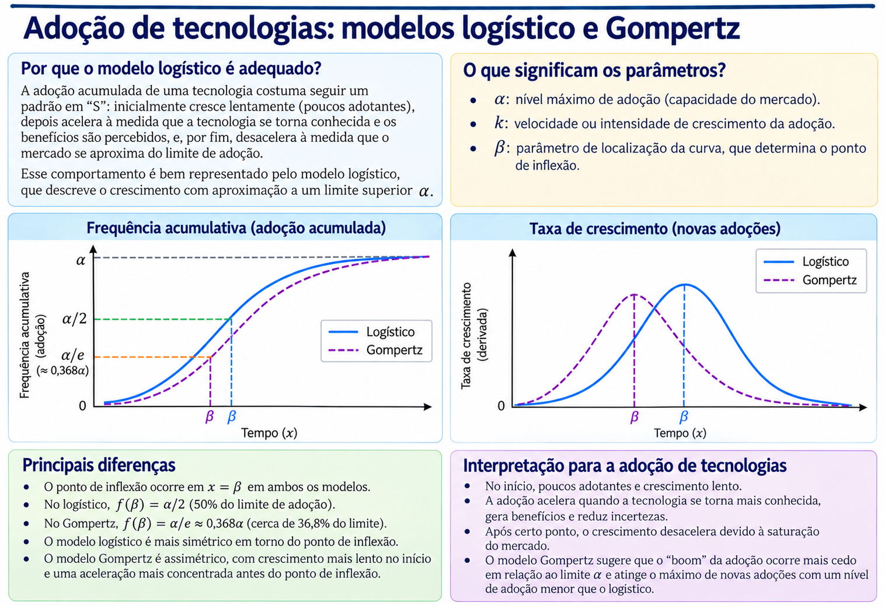
O modelo de Michaelis–Menten tem origem nos estudos de cinética enzimática desenvolvidos por Leonor Michaelis e Maud Leonora Menten, publicados em 1913, para investigar a relação entre a concentração de substrato e a velocidade de reações catalisadas por enzimas. O modelo é utilizado para representar relações de saturação, nas quais a resposta aumenta com a variável explicativa, mas tende progressivamente a um limite superior.
Sua expressão simplificada pode ser escrita como:
\[ Y_i=\frac{\alpha x_i}{\beta+x_i}+\epsilon_i, \]
em que, \(i=1,2,\ldots,n\);
\(Y_i\) é a \(i\)-ésima observação da variável dependente;
\(x_i\) é a \(i\)-ésima observação da variável independente;
\(\alpha\) é o valor assintótico superior da resposta, isto é, o valor para o qual a resposta esperada tende quando \(x_i\rightarrow\infty\);
\(\beta\) é o valor de \(x_i\) para o qual a resposta esperada corresponde à metade do valor assintótico \(\alpha\);
\(\epsilon_i\) é o erro aleatório associado à \(i\)-ésima observação, sendo \(\epsilon_i\sim N(0,\sigma^2)\).
📌 Para valores pequenos da variável explicativa, a resposta aumenta de forma mais acentuada. À medida que \(x_i\) aumenta, a taxa de crescimento da resposta diminui progressivamente, aproximando-se assintoticamente de \(\alpha\). Em outras palavras, o modelo de saturação Michaelis–Menten não apresenta forma sigmoidal nem ponto de inflexão: para \(\alpha>0\) e \(\beta>0\), a curva é crescente e côncava para baixo em todo o domínio \(x_i>0\).
📌 Os dois modelos de saturação, Logístico e de Gompertz possuem uma fase inicial de aceleração seguida de desaceleração; já o modelo de Michaelis–Menten apresenta desaceleração desde o início. Isso explica geometricamente por que os dois primeiros possuem ponto de inflexão e Michaelis–Menten não.
Na formulação original da cinética enzimática, o modelo é usualmente expresso como
\[ v=\frac{V_{\max} S}{K_m+S}, \]
em que \(v\) representa a velocidade da reação, \(S\) é a concentração de substrato, \(V_{\max}\) é a velocidade máxima da reação e \(K_m\) é a constante de Michaelis. Quando \(S=K_m\), tem-se
\[ v=\frac{V_{\max}K_m}{K_m+K_m} =\frac{V_{\max}}{2}. \]
Assim, \(K_m\) corresponde à concentração de substrato na qual a velocidade da reação atinge metade de \(V_{\max}\).
Aplicações
Além da aplicação clássica em cinética enzimática, a forma funcional de Michaelis–Menten pode representar fenômenos caracterizados por crescimento com saturação, tais como:
Os exemplos apresentados mostram diferentes formas de comportamento que podem ser representadas por modelos não lineares: crescimento ou decaimento exponencial, crescimento com saturação, crescimento assimétrico e relações de saturação. A escolha da forma funcional deve estar associada ao fenômeno estudado e à interpretação que se deseja atribuir aos parâmetros.
A questão de como estimar os parâmetros desses modelos, incluindo a escolha dos valores iniciais e os métodos iterativos empregados na estimação, será discutida no próximo capítulo.
A partir de uma amostra de observações de \(Y\), associadas aos respectivos valores observados de \(\mathbf X\), busca-se estimar as quantidades desconhecidas \(\boldsymbol{\theta}\) e \(\sigma^2\), que são os parâmetros do modelo.
Em um modelo de regressão linear múltipla, o vetor de médias condicionais é dado por uma combinação linear dos parâmetros: \[E(\mathbf Y\mid \mathbf X)=\mathbf X\boldsymbol{\theta}\] e, temos que a matriz de derivadas da sua função média em relação aos parâmetros coincide com a matriz de planejamento \(\mathbf X\).
Já na regressão não linear, como a função média \(\eta(\mathbf X, \boldsymbol{\theta})\) é não linear nos parâmetros \(\theta\), não é possível obter diretamente os estimadores pelos métodos da regressão linear. Para contornar isso, utiliza-se a matriz Jacobiana para construir uma aproximação linear local do modelo. Essa aproximação local é fundamental para os procedimentos iterativos de estimação e inferência.
Os elementos da matriz Jacobiana correspondem às derivadas parciais da função média em relação aos parâmetros, que geralmente dependem tanto das variáveis explicativas quanto dos parâmetros do modelo.
\[\mathbf{F}_0 = \mathbf{J}(\boldsymbol{\theta})=\begin{bmatrix} \frac{\partial \eta(x_1, \theta_0)}{\partial \theta_1} & \frac{\partial \eta(x_1, \theta_0)}{\partial \theta_2} & \dots & \frac{\partial \eta(x_1, \theta_0)}{\partial \theta_p} \\ \frac{\partial \eta(x_2, \theta_0)}{\partial \theta_1} & \frac{\partial \eta(x_2, \theta_0)}{\partial \theta_2} & \dots & \frac{\partial \eta(x_2, \theta_0)}{\partial \theta_p} \\ \vdots & \vdots & \ddots & \vdots \\ \frac{\partial \eta(x_n, \theta_0)}{\partial \theta_1} & \frac{\partial \eta(x_n, \theta_0)}{\partial \theta_2} & \dots & \frac{\partial \eta(x_n, \theta_0)}{\partial \theta_p} \end{bmatrix}\]
Em modelos não lineares, sob a suposição de efeitos fixos, erros independentes, distribuição Gaussiana e variância constante, a estimação dos parâmetros da função média pode ser realizada pelo método dos mínimos quadrados.
Os estimadores dos parâmetros são obtidos pela minimização da soma dos quadrados das diferenças entre os valores observados \(y_i\) e os valores ajustados pelo modelo,
\[ SQR(\theta)=\sum_{i} \left[ y_i-\eta(x_i,\boldsymbol{\theta}) \right]^2. \tag{4.1}\]
Na regressão não linear, a função média \(\eta(X,\theta)\) não é linear nos parâmetros \(\theta\), impossibilitando a obtenção de estimadores por meio das equações normais dos mínimos quadrados lineares. Dessa forma, a estimação dos parâmetros requer procedimentos iterativos, nos quais a função é linearizada localmente por expansões de Taylor.
Assim, para estimar os parâmetros do modelo via Mínimos Quadrados Ordinários (ou Gauss-Newton), recorremos à série de Taylor de primeira ordem em torno de um vetor de parâmetros de referência \(\theta_0\): \[\eta(x, \theta) \approx \eta(x, \theta_0) + \sum_{j=1}^{p} \frac{\partial \eta(x, \theta_0)}{\partial \theta_j} (\theta_j - \theta_{j0})\] Ao expandir a função para todas as \(n\) observações do conjunto de dados, chegamos à matriz de derivadas parciais, que é a matriz Jacobiana do modelo. Em notação matricial, temos: \[\eta(\boldsymbol{\theta}) \approx \eta(\boldsymbol{\theta}_0) + \mathbf{F}_0 (\boldsymbol{\theta} - \boldsymbol{\theta}_0)\]
Essa matriz \(\mathbf{F}_0\) assume o papel da matriz de delineamento \(X\) da regressão linear e desempenha papel fundamental na atualização das estimativas e na convergência do algoritmo de ajuste.
O vetor de correção dos parâmetros (\(\delta = \theta - \theta_0\)) é obtido resolvendo a equação normal adaptada: \[\delta = (\mathbf{F}_0^T \mathbf{F}_0)^{-1} \mathbf{F}_0^T [Y - \eta(x, \theta_0)]\] Note a semelhança direta com o estimador de mínimos quadrados clássico \(\hat{\beta} = (\mathbf X^T \mathbf X)^{-1} \mathbf X^T \mathbf Y\), onde o vetor de “respostas ajustadas” passa a ser o vetor de resíduos atualizados da função não linear.
Como a matriz de derivadas depende de \(\theta\) e o valor real é desconhecido, o processo ocorre por aproximações sucessivas utilizando um chute inicial \(\theta^{(0)}\). A cada iteração \(t\), o algoritmo:
Conforme os parâmetros são atualizados a cada passo iterativo (por exemplo, \(\theta^{(t+1)} = \theta^{(t)} + \delta\)), a matriz de derivadas é recalculada nos novos pontos.
Em modelos não lineares, o método dos mínimos quadrados constitue uma abordagem de estimação muito utilizada. Já o método da máxima verossimilhança fornece uma formulação mais geral, baseada na distribuição assumida para os dados.
No R, a função nls() realiza ajuste por mínimos quadrados não lineares e, em sua configuração padrão, utiliza uma estratégia baseada em Gauss–Newton.
Como o processo iterativo inicia-se com a especificação de valores iniciais para os parâmetros \(\theta_0,\theta_1,\ldots,\theta_{p}\), esses valores podem ser definidos com base em conhecimento teórico sobre o fenômeno, resultados de estudos anteriores, inspeção gráfica dos dados ou procedimentos de busca em uma grade de valores.
Além disso, a função permite a atribuição de pesos às observações, resultando em um ajuste por mínimos quadrados não lineares ponderados. Nesse contexto, o algoritmo busca minimizar uma soma ponderada dos quadrados dos resíduos, minimizando a função \(Q^*(\boldsymbol{\beta})=\sum_{i=1}^{n} w_i \bigl(y_i-\mu_i(\boldsymbol{\beta})\bigr)^2,\) em que \(w_i\) representa o peso associado à \(i-\)ésima observação. Dessa forma, observações com maiores pesos exercem maior influência no processo de estimação dos parâmetros.
O método dos mínimos quadrados está diretamente relacionado à especificação de erros Gaussianos, independentes e com variância constante. Uma abordagem mais geral consiste em especificar uma distribuição de probabilidade para a variável resposta e obter os estimadores dos parâmetros por máxima verossimilhança.
No caso da distribuição Gaussiana para \(Y|x\), a estimação por máxima verossimilhança consiste em encontrar os valores de \(\boldsymbol{\theta}\) e \(\sigma^2\) que maximizam a função de log-verossimilhança, denotada por \[ \ell(\theta,\sigma^2) = -\frac{n}{2}log(2\pi) - \frac{n}{2}log(\sigma^2) - \frac{1}{2\sigma^2} \sum(y_i - \eta(x_i,\theta))^2 \tag{4.2}\]
Sob as suposições de normalidade, independência e variância constante, maximizar a função de log-verossimilhança em relação a \(\boldsymbol{\theta}\) é equivalente a minimizar a soma dos quadrados dos desvios, uma vez que ambos os procedimentos dependem da quantidade \(\sum_{i=1}^{n}(y_i - \eta(x_i,\boldsymbol{\theta}))^2\). Assim, os dois métodos não representam necessariamente modelos diferentes, mas correspondem a diferentes formas de formular a estimação sob determinadas suposições probabilísticas.
Em um contexto mais geral, portanto, a máxima verossimilhança permite incorporar explicitamente diferentes distribuições para a variável resposta e diferentes estruturas de variância.
Entretanto, maximizar Equação 4.2 envolve métodos numéricos iterativos, entre os quais se encontra o método de Newton-Raphson.
Como já mencionado, em geral não existe uma expressão analítica para obter \(\widehat{\boldsymbol{\theta}}\). Por isso, a estimação é realizada numericamente e necessita de valores iniciais para os parâmetros. Esses valores iniciais não são as estimativas finais, apenas fornecem o ponto de partida para o procedimento numérico de estimação.
A escolha de valores iniciais pode utilizar informações obtidas do gráfico dos dados, da interpretação de parâmetros, da experiência do pesquisador e/ou à resultados de estudos anteriores.
Valores iniciais inadequados podem dificultar ou impedir a convergência do procedimento numérico. Por isso, a interpretação dos parâmetros e o conhecimento da escala das variáveis são importantes também na etapa de estimação. Por isso, recomenda-se prestar atenção na:
Escala das variáveis
Diferenças acentuadas entre as escalas das variáveis ou dos parâmetros podem dificultar a otimização numérica. Quando necessário, podem ser utilizadas estratégias como centralização, padronização ou reescala das unidades, desde que não comprometam a interpretação dos parâmetros.
Convergência
A convergência indica que o algoritmo encontrou uma solução numérica segundo o critério de parada adotado, mas não garante a adequação do modelo. Mesmo após a convergência, é necessário verificar a curva ajustada, os resíduos, a variabilidade dos erros e a plausibilidade da forma funcional adotada.
Convergência é uma propriedade do procedimento numérico; adequação é uma propriedade do modelo.
Os métodos de estimação fornecem estimativas pontuais para os parâmetros do modelo, mas esses valores estão sujeitos à variabilidade amostral. A inferência procura quantificar essa incerteza e avaliar hipóteses sobre os parâmetros.
Assim como na regressão linear, testes de hipóteses podem ser utilizados para avaliar afirmações específicas sobre os parâmetros de um modelo de regressão não linear. Nesse contexto, os procedimentos usuais de inferência fundamentam-se em aproximações para a distribuição dos estimadores.
Considerando um parâmetro \(\theta_j\), sob condições de regularidade e para amostras suficientemente informativas, utiliza-se a aproximação
\[ \hat{\theta}_j \approx N\left( \theta_j, \operatorname{Var}(\hat{\theta}_j) \right). \] Para testar \(H_0:\theta_j=\theta_0\), utiliza-se a estatística \[ t= \frac{\hat{\theta}_j-\theta_0}{SE(\hat{\theta}_j)}. \] Em modelos não lineares, essa estatística e seu erro-padrão são obtidos com base em uma aproximação linear local do modelo. Portanto, a inferência é aproximada e deve ser interpretada com cautela.
No contexto de mínimos quadrados não lineares, essa estatística é usualmente comparada a uma distribuição \(t\) de Student com \(n-p\) graus de liberdade residuais.
No R, para um modelo ajustado pela função nls(), o comando
summary(modelo)apresenta, para cada parâmetro, sua estimativa, erro-padrão, estatística \(t\) e p-valor.
Atenção à interpretação dos testes fornecidos pelo summary() do R No R, o ajuste de modelo não linear pode ser feito pela função nls(), conforme visto nos exemplos do Capítulo 3. Já a função summary() apresenta, para cada parâmetro, sua estimativa, erro-padrão, estatística \(t\) e p-valor.
Nessa saída, os valores de p-valor apresentados pelo summary() para cada parâmetro está associado ao teste \[H_0:\theta_j=0 \qquad\text{versus}\qquad H_1:\theta_j\neq0,\] de modo que a estatística apresentada corresponde a \[t=
\frac{\hat{\theta}_j}
{SE(\hat{\theta}_j)}.
\]
Entretanto, o valor zero nem sempre representa uma hipótese de interesse. Se o parâmetro corresponde, por exemplo, a uma assíntota, uma taxa de crescimento ou à localização de um ponto de inflexão, é necessário avaliar se \(\theta_j=0\) possui significado no contexto do fenômeno investigado.
Portanto, antes de interpretar o p-valor fornecido pelo summary(), é necessário perguntar: “O valor zero corresponde, de fato, à hipótese que quero testar?”
Quando a hipótese de interesse envolve outro valor de referência, o teste deve ser formulado em relação a esse valor, e não automaticamente em relação a zero.
Cabe ressaltar que nos modelos não lineares a distribuição dos estimadores é obtida de forma aproximada. Assim, a utilização da distribuição \(t\) para a realização dos testes também constitui uma aproximação, cuja adequação tende a melhorar quando a linearização local do modelo representa satisfatoriamente seu comportamento em torno das estimativas.
Na regressão linear, o teste \(F\) global é utilizado para avaliar conjuntamente se os coeficientes associados às variáveis explicativas são iguais a zero. Em modelos de regressão não linear, essa formulação não é diretamente transferível, pois atribuir simultaneamente o valor zero aos parâmetros pode não definir um modelo reduzido com significado estatístico ou científico. Testes baseados na estatística \(F\) podem ser utilizados para comparar modelos não lineares aninhados, quando um modelo reduzido pode ser obtido do modelo completo mediante restrições sobre seus parâmetros. Nesse caso, a comparação pode ser baseada na redução da soma de quadrados dos resíduos: \[ F= \frac{(SQR_R-SQR_C)/(p_C-p_R)} {SQR_C/(n-p_C)}, \] em que \(SQR_R\) e \(SQR_C\) representam as somas de quadrados dos resíduos dos modelos reduzido e completo, respectivamente, e \(p_R\) e \(p_C\) correspondem aos seus números de parâmetros. Em modelos não lineares a distribuição de referência desse teste é, em geral, aproximada. Assim, sua utilização requer que os modelos sejam efetivamente aninhados e que as restrições consideradas sejam compatíveis com a estrutura do modelo.
Intervalo de confiança de Wald
A incerteza das estimativas dos parâmetros pode ser expressa por erros-padrão e intervalos de confiança. Em mínimos quadrados não lineares, a matriz de variâncias e covariâncias é aproximada localmente por \[
\widehat{\operatorname{Var}}(\hat{\boldsymbol{\theta}})
=
\hat{\sigma}^{2}
\left(\mathbf{J}^{\top}\mathbf{J}\right)^{-1},
\qquad
\hat{\sigma}^{2}
=
\frac{\operatorname{SQR}}{n-p},\] em que \(\mathbf{J}\) é a matriz Jacobiana avaliada em \(\hat{\boldsymbol{\theta}}\), SQR é a soma dos quadrados dos resíduos, \(n\) é o número de observações e \(p\) é o número de parâmetros. O erro-padrão de \(\hat{\theta}_j\) é a raiz quadrada do elemento \(j\) da diagonal dessa matriz. Com base nessa aproximação, o intervalo de confiança de Wald para \(\theta_j\) é \[IC_{1-\alpha}(\theta_j)
=
\hat{\theta}_j
\pm
t_{1-\alpha/2,n-p}\,
SE(\hat{\theta}_j).\]
Esse intervalo é simétrico em torno de \(\hat{\theta}_j\) e usa a distribuição \(t\) com \((n-p)\) graus de liberdade, como é usual nos resultados de mínimos quadrados não lineares. Sua qualidade depende da adequação da aproximação linear local: se a função apresentar curvatura acentuada na região das estimativas, o intervalo pode representar mal a incerteza. Nesses casos, podem ser considerados métodos como o perfil de verossimilhança ou o bootstrap.
Intervalos de confiança baseados em perfil
No intervalo de Wald, calcula-se a margem de erro a partir do erro-padrão da estimativa. No intervalo baseado em perfil, avalia-se como o ajuste do modelo muda para diferentes valores de um parâmetro, reestimando os demais parâmetros a cada valor fixado. Esse procedimento é chamado de perfil do parâmetro.
A soma de quadrados perfilada para \(\theta_j\) é \[ S_p(\theta_j) = \min_{\boldsymbol{\theta}_{-j}} S(\theta_j,\boldsymbol{\theta}_{-j}), \] em que \(\boldsymbol{\theta}_{-j}\) reúne os demais parâmetros. A partir dessa função, calcula-se a estatística de perfil \(\tau(\theta_j)\).
Para construir um intervalo bilateral de nível \(1-\alpha\), encontram-se os valores de \(\theta_j\) em que essa estatística atinge o valor crítico \(c=t_{1-\alpha/2,\,n-p}\).
O limite inferior \(L_j\) é o valor de \(\theta_j\) para o qual \(\tau(\theta_j)=-c\), e o limite superior \(U_j\) é aquele para o qual \(\tau(\theta_j)=c\): \[\tau(L_j)=-t_{1-\alpha/2,\,n-p}, \qquad \tau(U_j)=t_{1-\alpha/2,\,n-p}.\] Esses limites são encontrados numericamente ao percorrer o perfil do parâmetro. Como o perfil pode variar de forma diferente em cada lado da estimativa, o intervalo pode ser assimétrico em torno de \(\hat{\theta}_j\).
Sob as hipóteses de erros independentes, normalmente distribuídos e com variância constante, o perfil da soma de quadrados residual corresponde ao perfil da verossimilhança. Assim, o perfil da soma de quadrados residual corresponde, sob essas hipóteses, como um perfil de verossimilhança. No R, os intervalos de perfil para objetos nls são calculados a partir do perfil da soma de quadrados residual.
Para um modelo ajustado pela função nls(), o R permite obter os dois tipos de intervalos apresentados anteriormente:
# Intervalos de confiança baseados em perfil
confint(modelo)
# Intervalos de confiança de Wald
confint.default(modelo)Ambos os métodos quantificam a incerteza das estimativas, mas usam procedimentos distintos. Essa diferença pode ser relevante quando a aproximação local utilizada pelo intervalo de Wald não descreve bem o comportamento do modelo.
Para aprofundar o estudo da inferência em modelos de regressão não linear no R, recomenda-se consultar também o tutorial do pacote nlstools, A Toolbox for Nonlinear Regression in R: The Package nlstools, que apresenta ferramentas específicas para ajuste, diagnóstico e construção de intervalos de confiança em modelos não lineares.
Depois de estimar os parâmetros, é necessário verificar se o modelo ajustado representa adequadamente os dados e se as suposições utilizadas na inferência são razoáveis.
Os valores ajustados são dados por
\[ \widehat{Y}_i = f(\mathbf{x}_i,\widehat{\boldsymbol{\theta}}), \]
e os resíduos são
\[ e_i=Y_i-\widehat{Y}_i. \] Os procedimentos utilizados para a análise dos resíduos são bastante semelhantes aos aplicados para os modelos de regressão linear. Nesta seção, esses procedimentos serão retomados no contexto dos modelos não lineares.
Para ilustrar os procedimentos de diagnóstico e avaliação do ajuste, será utilizado o conjunto de dados Puromycin, disponível no pacote datasets do R. O conjunto de dados contém 23 observações da velocidade de uma reação enzimática em diferentes concentrações de substrato, considerando células tratadas e não tratadas com puromicina.
Inicialmente, serão utilizadas apenas as observações referentes ao grupo tratado:
da_tratado <- subset(Puromycin, state == "treated")
da_tratado conc rate state
1 0.02 76 treated
2 0.02 47 treated
3 0.06 97 treated
4 0.06 107 treated
5 0.11 123 treated
6 0.11 139 treated
7 0.22 159 treated
8 0.22 152 treated
9 0.56 191 treated
10 0.56 201 treated
11 1.10 207 treated
12 1.10 200 treatedO diagrama de dispersão permite observar a relação entre a concentração do substrato e a velocidade da reação:
plot(rate ~ conc,
data = da_tratado,
pch = 19,
xlab = "Concentração do substrato",
ylab = "Velocidade da reação")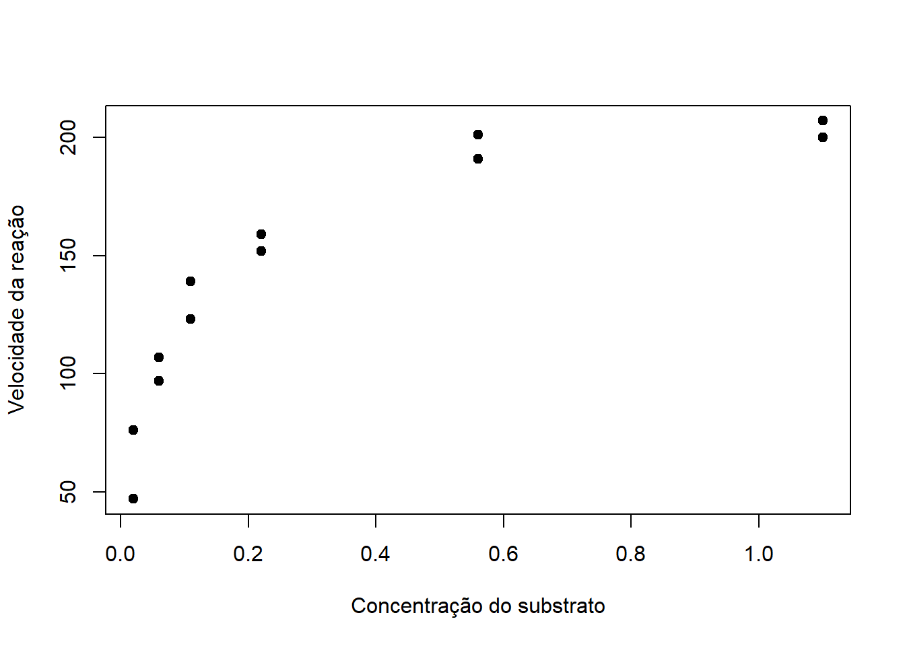
Observa-se um crescimento da resposta seguido de uma tendência à estabilização, comportamento compatível com funções de saturação.
O primeiro modelo considerado será o de Michaelis–Menten,
\[ Y_i= \frac{V_{\max}x_i}{K_m+x_i} +\epsilon_i, \]
em que \(V_{\max}\) representa a velocidade máxima da reação, a assíntota do modelo, e \(K_m\) corresponde à concentração de substrato na qual a velocidade atinge metade de \(V_{\max}\).
O modelo pode ser ajustado por:
mod_mm<- nls(
rate ~ alpha * conc / (beta + conc),
data = da_tratado,
start = list(alpha = 200, beta = 0.05)
)
summary(mod_mm)
Formula: rate ~ alpha * conc/(beta + conc)
Parameters:
Estimate Std. Error t value Pr(>|t|)
alpha 2.127e+02 6.947e+00 30.615 3.24e-11 ***
beta 6.412e-02 8.281e-03 7.743 1.57e-05 ***
---
Signif. codes: 0 '***' 0.001 '**' 0.01 '*' 0.05 '.' 0.1 ' ' 1
Residual standard error: 10.93 on 10 degrees of freedom
Number of iterations to convergence: 5
Achieved convergence tolerance: 8.768e-06Para esses dados, são obtidas aproximadamente as estimativas \[ \widehat{\alpha}=212{,}68 \qquad\text{e}\qquad \widehat{\beta}=0{,}064. \] ### Avaliação gráfica do ajuste
Uma primeira avaliação consiste em representar conjuntamente os valores observados e a curva estimada:
x_grid_puro <- seq(min(da_tratado$conc),
max(da_tratado$conc),
length.out = 200)
y_mm <- predict(
mod_mm,
newdata = data.frame(conc = x_grid_puro)
)
plot(rate ~ conc,
data = da_tratado,
pch = 19,
xlab = "Concentração do substrato",
ylab = "Velocidade da reação")
lines(x_grid_puro, y_mm, col="#00BFC4", lwd = 2)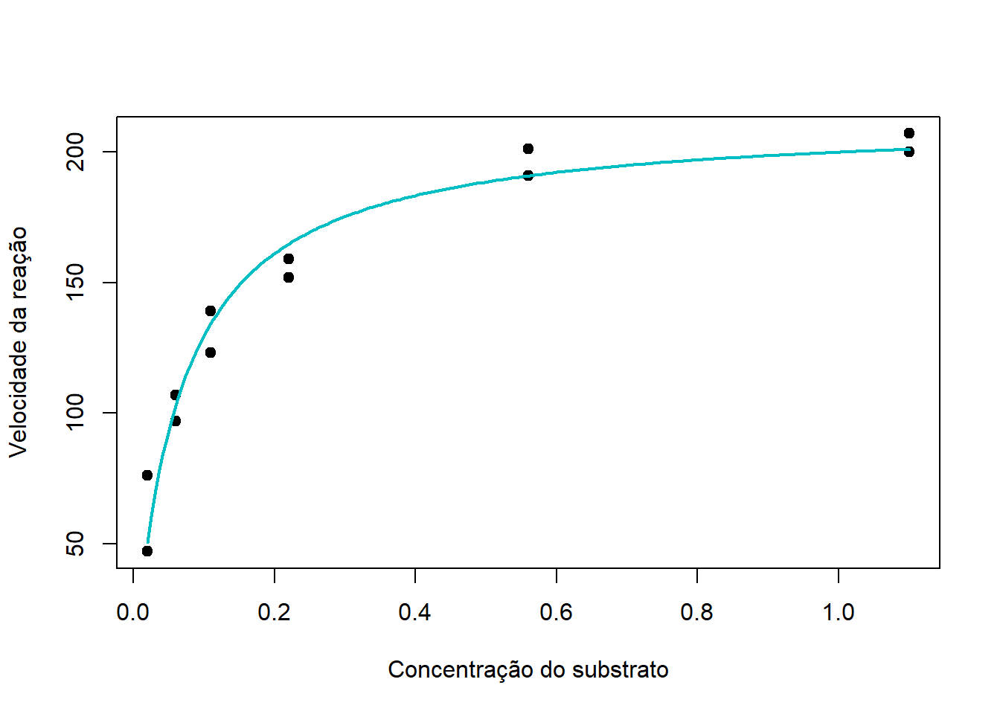
A representação gráfica permite verificar se o formato imposto pelo modelo é coerente com o comportamento observado nos dados. No modelo de Michaelis–Menten, espera-se crescimento progressivamente mais lento da resposta à medida que esta se aproxima da assíntota.
Após ajustar o modelo, a análise dos resíduos ajuda a avaliar se a forma funcional e as pressuposições adotadas são compatíveis com os dados. Para isso, examinaremos possíveis padrões nos resíduos, alterações na dispersão, desvios da normalidade e dependência entre observações.
O pacote nlstools fornece gráficos de diagnóstico para objetos ajustados com nls()
library(nlstools)
# Análise dos resíduos em um MNL
res_puro<- nlsResiduals(mod_mm)
plot(res_puro)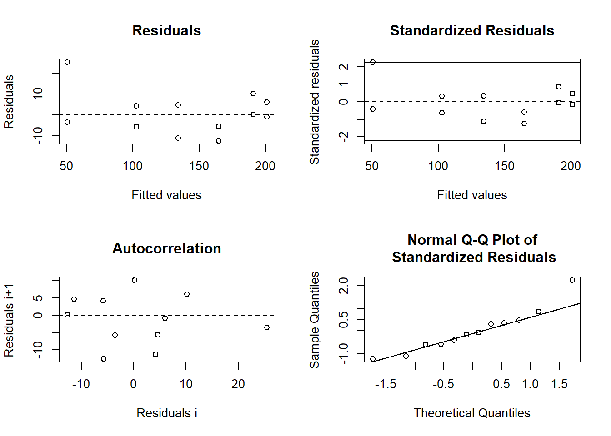
# Valores ajustados pelo modelo
aj_puro_mm <- fitted(mod_mm)Por padrão, são apresentados quatro gráficos que auxiliam na avaliação visual dos resíduos:
Resíduos versus valores ajustados: ajuda a avaliar se os resíduos se distribuem em torno de zero sem padrões sistemáticos. Curvaturas ou tendências podem indicar falta de ajuste do modelo.
Resíduos padronizados versus valores ajustados: permite examinar possíveis mudanças na dispersão dos resíduos ao longo dos valores ajustados e identificar observações com valores padronizados extremos, o que pode indicar variância não constante.
Autocorrelação: ajuda a identificar possível dependência entre observações consecutivas, especialmente quando sua ordem tem significado.
Gráfico Q–Q Plot: permite avaliar visualmente se a distribuição dos resíduos é compatível com a normalidade. Desvios sistemáticos em relação à reta podem indicar afastamento da normalidade
Os gráficos padrão de nlstools() não avaliam distância de Cook nem alavancagem. O pacote oferece também outros gráficos, como resíduos padronizados versus ajustados e raiz do valor absoluto dos resíduos padronizados versus ajustados.
Embora o modelo ajustado seja não linear, esses diagnósticos se baseiam em uma aproximação linear local do modelo, construída a partir da Jacobiana avaliada nas estimativas dos parâmetros. Por isso, os resultados devem ser interpretados como diagnósticos aproximados.
A inspeção gráfica dos resíduos pode ser complementada pelos testes formais, como:
Novamente, como em modelos de regressão não linear, a aplicação desses testes pode ser fundamentada em aproximações linear local do modelol, potanto, os resultados devem ser interpretados levando em conta essa aproximação.
Quando forem identificadas evidências de autocorrelação, uma alternativa consiste em manter a função média do modelo e incorporar uma estrutura de correlação aos erros, como um processo autorregressivo de primeira ordem, AR(1).
# Resíduos numéricos do modelo não linear
e <- residuals(mod_mm)
# 1. Shapiro-Wilk: normalidade dos resíduos
teste_sw <- shapiro.test(e)
teste_sw
Shapiro-Wilk normality test
data: e
W = 0.92902, p-value = 0.3698Para os testes de Breusch–Pagan e Durbin–Watson, usamos uma regressão auxiliar baseada na aproximação linear local do modelo, construída com a Jacobiana:
# Jacobiana avaliada nas estimativas do modelo
J <- mod_mm$m$gradient()
# Resposta da aproximação linear local
y_estrela <- e + drop(J %*% coef(mod_mm))
# Regressão auxiliar local
dados_aux <- as.data.frame(J)
dados_aux$y_estrela <- y_estrela
reg_local <- lm(y_estrela ~ . - 1, data = dados_aux)
# 2. Breusch-Pagan: homocedasticidade
library(lmtest)
teste_bp <- bptest(reg_local)
teste_bp
studentized Breusch-Pagan test
data: reg_local
BP = 1.1461, df = 1, p-value = 0.2844# 3. Durbin-Watson: autocorrelação de primeira ordem
teste_dw <- dwtest(reg_local, alternative = "two.sided")
teste_dw
Durbin-Watson test
data: reg_local
DW = 1.615, p-value = 0.2844
alternative hypothesis: true autocorrelation is not 0# Tabela de resultados dos testes aplicados:
resultados_testes <- data.frame(
Teste = c("Shapiro-Wilk", "Breusch-Pagan", "Durbin-Watson"),
Estatística = c(
unname(teste_sw$statistic),
unname(teste_bp$statistic),
unname(teste_dw$statistic)
),
p_valor = c(
teste_sw$p.value,
teste_bp$p.value,
teste_dw$p.value
)
)
knitr::kable(
resultados_testes,
digits = 4,
caption = "Testes de diagnóstico dos resíduos do modelo de Michaelis–Menten"
)| Teste | Estatística | p_valor |
|---|---|---|
| Shapiro-Wilk | 0.9290 | 0.3698 |
| Breusch-Pagan | 1.1461 | 0.2844 |
| Durbin-Watson | 1.6150 | 0.2844 |
Diferentes funções não lineares podem representar de forma plausível um mesmo fenômeno. Para avaliar a qualidade dos ajustes e orientar a seleção do modelo mais adequado, comparamos diferentes medidas de adequabilidade.
Para ilustrar essa comparação, além do modelo de Michaelis–Menten será considerado um modelo de saturação exponencial, dado por
\[ Y_i= \alpha\left(1-e^{-\kappa x_i}\right) +\epsilon_i, \]
em que \(\alpha\) representa a assíntota superior e \(\kappa>0\) controla a velocidade com que a resposta se aproxima dessa assíntota.
O modelo pode ser ajustado por:
# Ajuste do modelo de saturação exponencial
mod_exp <- nls(
rate ~ alpha * (1 - exp(-kappa * conc)),
data = da_tratado,
start = list(alpha = 200, kappa = 10)
)Os gráficos ajudam a identificar padrões nos resíduos, mudanças na dispersão, possíveis desvios da normalidade e dependência entre observações consecutivas. Os testes complementam a avaliação visual; seus resultados não devem ser interpretados isoladamente.
# Gráficos de diagnóstico
res_mm <- nlsResiduals(mod_exp)
plot(res_mm)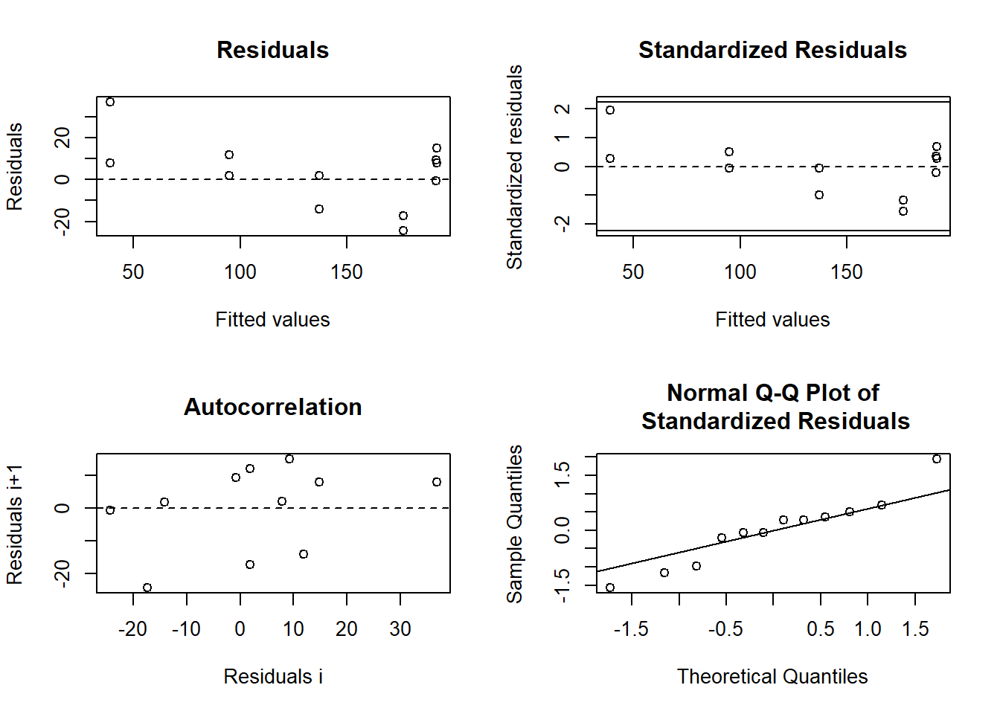
# Testes: Shapiro–Wilk aos resíduos; Breusch–Pagan e Durbin–Watson,
# com base na aproximação linear local pela Jacobiana
testes_nls <- function(modelo) {
residuos <- residuals(modelo)
# Normalidade dos resíduos
sw <- shapiro.test(residuos)
# Regressão auxiliar baseada na aproximação linear local
J <- modelo$m$gradient()
y_estrela <- residuos + drop(J %*% coef(modelo))
dados_aux <- as.data.frame(J)
dados_aux$y_estrela <- y_estrela
reg_local <- lm(y_estrela ~ . - 1, data = dados_aux)
# Variância constante e autocorrelação de primeira ordem
bp <- bptest(reg_local)
dw <- dwtest(reg_local, alternative = "two.sided")
data.frame(
Teste = c("Shapiro–Wilk", "Breusch–Pagan", "Durbin–Watson"),
Estatistica = c(
unname(sw$statistic),
unname(bp$statistic),
unname(dw$statistic)
),
p_valor = c(sw$p.value, bp$p.value, dw$p.value)
)
}
#testes_mm <- testes_nls(mod_mm)
#testes_mm
testes_exp <- testes_nls(mod_exp)
testes_exp Teste Estatistica p_valor
1 Shapiro–Wilk 0.9479527 0.60727402
2 Breusch–Pagan 0.4153510 0.51926598
3 Durbin–Watson 1.0100544 0.02112726A interpretação do teste de Durbin–Watson depende da ordem das observações. Como os dados de concentração não têm uma ordem temporal natural, o teste deve ser entendido em relação à ordenação usada na base.
O gráfico apresentado na Figura 6.1 permite comparar visualmente os dois ajustes:
y_exp <- predict(
mod_exp,
newdata = data.frame(conc = x_grid_puro)
)
curvas <- data.frame(
conc = rep(x_grid_puro, 2),
rate = c(y_mm, y_exp),
Modelo = rep(c("Michaelis–Menten", "Exponencial simples"),
each = length(x_grid_puro))
)
library(ggplot2)
#| out-width: "80%"
ggplot(da_tratado, aes(conc, rate)) +
geom_point(color = "gray40") +
geom_line(
data = curvas,
aes(color = Modelo, linetype = Modelo),
linewidth = 1
) +
labs(
x = "Concentração do substrato",
y = "Velocidade da reação",
color = "Modelo",
linetype = "Modelo"
) +
theme_minimal() +
theme(
legend.position = c(0.85, 0.45),
legend.justification = c(1, 1),
legend.background = element_rect(fill = alpha("white", 0.6))
)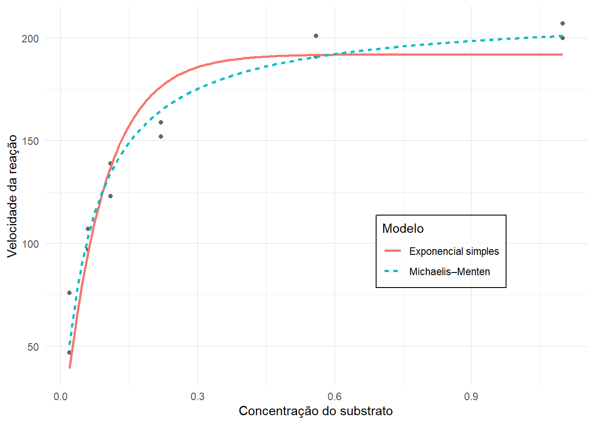
Considere \(n\) observações e \(q\) parâmetros estimados na função média.
A soma de quadrados dos resíduos (SQR) é \[ \operatorname{SQR} = \sum_{i=1}^{n}(y_i-\hat{y}_i)^2, \] em que \(y_i\) e \(\hat{y}_i\) são, respectivamente, o valor observado e o valor ajustado. Para modelos ajustados aos mesmos dados e à mesma resposta, valores menores de SQR indicam menor discrepância residual.
O desvio-padrão residual (DPR) considera os graus de liberdade residuais: \[ \operatorname{DPR} = \sqrt{\frac{\operatorname{SQR}}{n-q}}. \] Valores menores indicam menor dispersão residual, levando em conta o número de parâmetros estimados.
O coeficiente de determinação ajustado é \[ R^2_{\mathrm{aj.}} = 1 - \frac{\operatorname{SQR}/(n-q)}{\operatorname{SQT}/(n-1)} = 1 - \frac{n-1}{n-q}(1-R^2),\] em que \(\operatorname{SQT}=\sum_{i=1}^{n}(y_i-\bar{y})^2\), \(R^2=1-\frac{\operatorname{SQR}}{\operatorname{SQT}}\) e \(q\) é o número total de parâmetros estimados na função média.
Em regressão não linear, valores de \(R^2\) ou \(R^2_{aj.}\) só fazem sentido para comparação de modelos; como número isolado não quer dizer muita coisa em termos de desempenho do modelo até mesmo porque estes coeficientes medem o grau de associação linear entre as observações e suas respectivas respostas ajustadas. Por isso, a principal validade dessas métricas reside na comparação relativa entre modelos concorrentes ajustados aos mesmos dados.
Sob erros independentes, normalmente distribuídos e com variância constante, os critérios de informação \(AIC\) e \(BIC\) podem ser calculados a partir da log-verossimilhança: \[ \operatorname{AIC} = -2\ell(\hat{\boldsymbol{\theta}},\hat{\sigma}^2)+ 2K, \quad \operatorname{BIC} =-2\ell(\hat{\boldsymbol{\theta}},\hat{\sigma}^2) + K\log(n),\] em que \(\ell\) é a log-verossimilhança e \(K=q+1\) conta os \(q\) parâmetros da função média e o parâmetro de variância \(\sigma^2\). Em geral, valores menores de AIC e BIC indicam melhor equilíbrio entre ajuste e complexidade, na comparação de modelos ajustados aos mesmos dados.
O PRESS avalia o desempenho preditivo por validação leave-one-out. Seja \(\hat{y}_{i(-i)}\) a previsão para a observação \(i\), obtida após ajustar o modelo sem essa observação. Então, \[\operatorname{PRESS} = \sum_{i=1}^{n} \left(y_i-\hat{y}_{i(-i)}\right)^2. \] Valores menores de PRESS indicam menor erro preditivo nesse procedimento. Nos modelos não lineares, cada previsão leave-one-out requer reajustar o modelo às \(n-1\) observações restantes.
\(\Rightarrow\) Na comparação entre os modelos, menores valores de SQR e DPR indicam menor discrepância entre os valores observados e ajustados. Menores valores de AIC e BIC indicam melhor compromisso entre qualidade do ajuste e complexidade. O PRESS avalia o desempenho preditivo: menores valores indicam menor erro de predição quando cada observação é, sucessivamente, deixada fora do ajuste. Já o \(R^2\) apresentado deve ser utilizado como uma medida descritiva da redução relativa da soma de quadrados dos resíduos em relação ao uso da média da resposta.
Contudo, a escolha do modelo não deve ser baseada em uma única medida. É necessário considerar conjuntamente a qualidade numérica do ajuste, o diagnóstico dos resíduos, a interpretação dos parâmetros e a plausibilidade da forma funcional para o fenômeno estudado.
Calculando essas medidas para os dois modelos ajustados, temos:
#Cálculo da medida PRESS
press_nls <- function(modelo, dados, resposta) {
formula_modelo <- formula(modelo)
inicio <- as.list(coef(modelo))
erros2 <- numeric(nrow(dados))
for (i in seq_len(nrow(dados))) {
ajuste_i <- try(
nls(
formula_modelo,
data = dados[-i, , drop = FALSE],
start = inicio,
control = nls.control(maxiter = 200, warnOnly = TRUE)
),
silent = TRUE
)
if (inherits(ajuste_i, "try-error")) {
return(NA_real_)
}
predicao <- predict(ajuste_i, newdata = dados[i, , drop = FALSE])
erros2[i] <- (dados[[resposta]][i] - predicao)^2
}
sum(erros2)
}
# Função para calcular as medidas de ajuste
medidas_ajuste <- function(modelo, dados, resposta) {
y <- dados[[resposta]]
n <- length(y)
p <- length(coef(modelo))
sqr <- deviance(modelo)
sqt <- sum((y - mean(y))^2)
data.frame(
SQR = sqr,
DPR = sqrt(sqr / (n - p)),
R2_aj. = 1 - (sqr / (n - p)) / (sqt / (n - 1)),
AIC = AIC(modelo),
BIC = BIC(modelo),
PRESS = press_nls(modelo, dados, resposta)
)
}
comparacao <- rbind(
"Michaelis–Menten" = medidas_ajuste(mod_mm, da_tratado, "rate"),
"Exponencial simples" = medidas_ajuste(mod_exp, da_tratado, "rate")
)
# Montando tabela com os resultados
#| label: tbl-adequabilidade
knitr::kable(
round(comparacao, 3),
caption = "Medidas de adequabilidade dos modelos de saturação."
) | SQR | DPR | R2_aj. | AIC | BIC | PRESS | |
|---|---|---|---|---|---|---|
| Michaelis–Menten | 1195.449 | 10.934 | 0.957 | 95.271 | 96.726 | 1614.846 |
| Exponencial simples | 3041.553 | 17.440 | 0.892 | 106.477 | 107.932 | 4057.837 |
Para os dados analisados, o modelo de Michaelis–Menten apresenta menor SQR e menor desvio-padrão residual, maior \(R^2\), menores valores de AIC, BIC e PRESS. Portanto, segundo todas as medidas consideradas, esse modelo apresenta melhor qualidade de ajuste aos dados do grupo tratado.
Dois modelos são considerados aninhados quando um deles, denominado modelo reduzido, pode ser obtido a partir de outro, o modelo completo, mediante a imposição de uma ou mais restrições sobre seus parâmetros. Nesse contexto, além das medidas de ajuste, é possível avaliar se a inclusão de parâmetros adicionais proporciona uma redução estatisticamente significativa na soma de quadrados dos resíduos (\(SQR\)).
A comparação entre modelos aninhados é formalizada pelo teste F, que avalia as hipóteses:
\(H_0:\) todas as restrições sobre os parâmetros impostas pelo modelo reduzido são válidas.
\(H_a:\) pelo menos uma das restrições sobre os parâmetros impostas pelo modelo reduzido é inválida.
Considerando dois modelos ajustados ao mesmo conjunto de observações, com \(q_R\) e \(q_C\) parâmetros, respectivamente, em que \(q_R < q_C\), a estatística do \(teste \quad F\) é dada por:
\[ F=\frac{(SQR_R-SQR_C)/(q_C-q_R)} {SQR_C/(n-q_C)}, \]
em que \(SQR_R\) e \(SQR_C\) representam as somas de quadrados dos resíduos dos modelos reduzido e completo, respectivamente, e \(n\) corresponde ao número de observações.
Sob as suposições de erros independentes, Gaussianos e com variância constante, e satisfeitas as condições de regularidade, a estatística pode ser comparada aproximadamente à distribuição F com (\(q_C-q_R\)) e (\(n-q_C\)) graus de liberdade.
Para ilustrar essa situação, serão utilizados agora os dois grupos presentes nos dados Puromycin: treated e untreated.
O objetivo é avaliar se os dois grupos experimentais, definidos pela presença ou ausência de tratamento com puromicina, podem ser descritos por uma única curva que relaciona a concentração de substrato à velocidade da reação ou se cada grupo requer parâmetros próprios.
No modelo completo (\(M_C\)), os parâmetros podem assumir valores distintos nos dois grupos:
\[ \begin{aligned} \mu_U(x)&=\frac{\alpha_U x}{\beta_U+x}, \quad \text{e} \quad \mu_T(x)&=\frac{\alpha_T x}{\beta_T+x}, \end{aligned} \]
em que \(U\) indica o grupo não tratado e \(T\) o tratado. Definindo
\[ z_i=\begin{cases} 0, & \text{não tratado},\\ 1, & \text{tratado} \end{cases}, \quad \Delta_\alpha=\alpha_T-\alpha_U \quad \text{e} \quad \Delta_\beta=\beta_T-\beta_U, \]
a função média do modelo completo pode ser escrita como
\[ E(Y_i\mid x_i,z_i)= \frac{(\alpha_U+\Delta_\alpha z_i)x_i} {\beta_U+\Delta_\beta z_i+x_i}. \]
Assim, \(M_C\) possui quatro parâmetros: \(\alpha_U\), \(\Delta_\alpha\), \(\beta_U\) e \(\Delta_\beta\).
# Carregando a base de dados
data("Puromycin", package = "datasets")
dados <- Puromycin
dados$z <- as.numeric(dados$state == "treated")
# Ajustando o modelo completo
mod_C <- nls(
rate ~ (alpha_U + delta_alpha * z) * conc /
(beta_U + delta_beta * z + conc),
data = dados,
start = list(
alpha_U = 160, delta_alpha = 50,
beta_U = 0.05, delta_beta = 0.01
)
)
summary(mod_C)
Formula: rate ~ (alpha_U + delta_alpha * z) * conc/(beta_U + delta_beta *
z + conc)
Parameters:
Estimate Std. Error t value Pr(>|t|)
alpha_U 1.603e+02 6.896e+00 23.242 2.04e-15 ***
delta_alpha 5.240e+01 9.551e+00 5.487 2.71e-05 ***
beta_U 4.771e-02 8.281e-03 5.761 1.50e-05 ***
delta_beta 1.641e-02 1.143e-02 1.436 0.167
---
Signif. codes: 0 '***' 0.001 '**' 0.01 '*' 0.05 '.' 0.1 ' ' 1
Residual standard error: 10.4 on 19 degrees of freedom
Number of iterations to convergence: 5
Achieved convergence tolerance: 3.163e-06As estimativas dos parâmetros do grupo tratado são obtidas pelas relações \[\widehat\alpha_T=\widehat\alpha_U+\widehat\Delta_\alpha \quad \text{e} \quad \widehat\beta_T=\widehat\beta_U+\widehat\Delta_\beta.\]
O primeiro modelo reduzido (\(M_{R1}\)) considera que ambos os grupos compartilham a mesma velocidade máxima e a mesma constante de Michaelis–Menten. Isso corresponde às restrições:
\[ H_0:\quad \Delta_\alpha=0\quad\text{e}\quad\Delta_\beta=0. \]
# Ajustando o M_{R1}
mod_R1 <- nls(
rate ~ alpha * conc / (beta + conc),
data = dados,
start = list(alpha = 190, beta = 0.06)
)
summary(mod_R1)
Formula: rate ~ alpha * conc/(beta + conc)
Parameters:
Estimate Std. Error t value Pr(>|t|)
alpha 190.80634 8.76459 21.770 6.84e-16 ***
beta 0.06039 0.01077 5.608 1.45e-05 ***
---
Signif. codes: 0 '***' 0.001 '**' 0.01 '*' 0.05 '.' 0.1 ' ' 1
Residual standard error: 18.61 on 21 degrees of freedom
Number of iterations to convergence: 4
Achieved convergence tolerance: 2.255e-06# Teste F - modelos aninhados: M_{R1} e M_C
comparacao_1 <- anova(mod_R1, mod_C)
comparacao_1Analysis of Variance Table
Model 1: rate ~ alpha * conc/(beta + conc)
Model 2: rate ~ (alpha_U + delta_alpha * z) * conc/(beta_U + delta_beta * z + conc)
Res.Df Res.Sum Sq Df Sum Sq F value Pr(>F)
1 21 7276.5
2 19 2055.1 2 5221.5 24.138 6.075e-06 ***
---
Signif. codes: 0 '***' 0.001 '**' 0.01 '*' 0.05 '.' 0.1 ' ' 1As SQR são aproximadamente \(SQR_{R1}=7276{,}55\) e \(SQR_C=2055{,}05\). Com \(n=23\), obtém-se
\[ F=\frac{(7276{,}55-2055{,}05)/(4-2)}{2055{,}05/(23-4)} \approx 24{,}14. \] O valor-p é inferior a \(0{,}001\). Ao nível de significância de 5%, há indicação de rejeição de \(H_0\). Assim, incorporar parâmetros específicos por grupo ao ajuste proporcionará uma redução significativa da SQR. Portanto, uma única curva de Michaelis–Menten não parece adequada para representar ambos os grupos. A comparação, contudo, não identifica qual parâmetro difere entre eles.
Considera-se, então, um segundo modelo reduzido (\(M_{R2}\)), no qual as velocidades máximas podem diferir, mas o parâmetro \(\beta\) é compartilhado pelos grupos. Com isso, temos a função média:
\[ E(Y_i\mid x_i,z_i)= \frac{(\alpha_U+\Delta_\alpha z_i)x_i}{\beta+x_i}. \]
Essa função é obtida a partir do modelo completo pela restrição \(H_0:\quad\Delta_\beta=0\), ou, equivalentemente, \(\beta_T=\beta_U\).
# Ajustando M_{R2}:
mod_R2 <- nls(
rate ~ (alpha_U + delta_alpha * z) * conc /
(beta + conc),
data = dados,
start = list(
alpha_U = 160, delta_alpha = 50,
beta = 0.055
)
)
summary(mod_R2)
Formula: rate ~ (alpha_U + delta_alpha * z) * conc/(beta + conc)
Parameters:
Estimate Std. Error t value Pr(>|t|)
alpha_U 166.60407 5.80743 28.688 < 2e-16 ***
delta_alpha 42.02596 6.27214 6.700 1.61e-06 ***
beta 0.05797 0.00591 9.809 4.37e-09 ***
---
Signif. codes: 0 '***' 0.001 '**' 0.01 '*' 0.05 '.' 0.1 ' ' 1
Residual standard error: 10.59 on 20 degrees of freedom
Number of iterations to convergence: 5
Achieved convergence tolerance: 1.579e-06# Teste F - modelos aninhados M_{R2} e M_C
comparacao_2 <- anova(mod_R2, mod_C)
comparacao_2Analysis of Variance Table
Model 1: rate ~ (alpha_U + delta_alpha * z) * conc/(beta + conc)
Model 2: rate ~ (alpha_U + delta_alpha * z) * conc/(beta_U + delta_beta * z + conc)
Res.Df Res.Sum Sq Df Sum Sq F value Pr(>F)
1 20 2240.9
2 19 2055.1 1 185.84 1.7182 0.2056As SQR são aproximadamente \(SQR_{R2}=2240{,}89\) e \(SQR_C=2055{,}05\). Assim, \[ F=\frac{(2240{,}89-2055{,}05)/(4-3)}{2055{,}05/(23-4)} \approx 1{,}72. \] O valor-p é aproximadamente \(0{,}206\). Ao nível de significância de 5%, não há evidências para rejeição de \(H_0\). Portanto, não foram encontradas evidências suficientes de que o parâmetro \(\beta\) difira entre os grupos. A ausência de rejeição não implica igualdade entre os parâmetros, mas indica que permitir essa diferença não produz melhora estatisticamente significativa no ajuste. Ressalta‑se, contudo, que o modelo já admite que as velocidades máximas possam variar entre os grupos.
A Tabela 8.1 resume os resultados que mostram a inadequação de uma única curva de Michaelis–Menten para descrever ambos os grupos.
| Modelos comparados | Restrições sob \(H_0\) | Valor \(F\) | Valor‑p |
|---|---|---|---|
| \(M_{R1}\) vs. \(M_C\) | \(\Delta_\alpha=0\) e \(\Delta_\beta=0\) | 24,14 | \(<0{,}001\) |
| \(M_{R2}\) vs. \(M_C\) | \(\Delta_\beta=0\) | 1,72 | \(0{,}206\) |
Quando se permitem velocidades máximas distintas, a inclusão de um parâmetro adicional para diferenciar \(\beta\) não produziu redução estatisticamente significativa da SQR. Entre os modelos considerados, \(M_{R2}\) é a alternativa mais parcimoniosa compatível com essas comparações, sem dispensar a análise dos resíduos e a verificação das suposições adotadas para os erros.
A Figura 7.1 apresenta as observações de cada grupo e as curvas estimadas. As cores distinguem os tratamentos, enquanto os tipos de linha identificam os modelos. O modelo reduzido 1 possui uma única curva, comum aos dois grupos; os outros modelos apresentam duas curvas cada.
cores <- c(treated = "#2166AC", untreated = "#D6604D")
plot(
rate ~ conc, data = dados,
col = cores[as.character(dados$state)],
pch = ifelse(dados$z == 1, 16, 17),
xlab = "Concentração de substrato (ppm)",
ylab = "Velocidade da reação (contagens/min/min)",
las = 1,
ylim = c(0, max(dados$rate) * 1.12)
)
conc_seq <- seq(0, max(dados$conc), length.out = 200)
# Reduzido 1: curva única, cinza pontilhada
lines(
conc_seq,
predict(mod_R1, newdata = data.frame(conc = conc_seq)),
col = "gray35", lty = 3, lwd = 2.5
)
for (grupo in c("treated", "untreated")) {
novos <- data.frame(
conc = conc_seq,
z = as.numeric(grupo == "treated")
)
# Completo: linha contínua
lines(
conc_seq, predict(mod_C, newdata = novos),
col = cores[grupo], lty = 1, lwd = 2
)
# Reduzido 2: linha tracejada
lines(
conc_seq, predict(mod_R2, newdata = novos),
col = cores[grupo], lty = 2, lwd = 2
)
}
legend(
"bottomright",
legend = c(
"Tratado: observações",
"Não tratado: observações",
"Completo (4 parâmetros) – tratado",
"Completo (4 parâmetros) – não tratado",
"Reduzido 2 (3 parâmetros) – tratado",
"Reduzido 2 (3 parâmetros) – não tratado",
"Reduzido 1 (2 parâmetros)"
),
col = c(
cores["treated"], cores["untreated"],
cores["treated"], cores["untreated"],
cores["treated"], cores["untreated"],
"gray35"
),
pch = c(16, 17, NA, NA, NA, NA, NA),
lty = c(NA, NA, 1, 1, 2, 2, 3),
lwd = c(NA, NA, 2, 2, 2, 2, 2.5),
bty = "n", cex = 0.82
)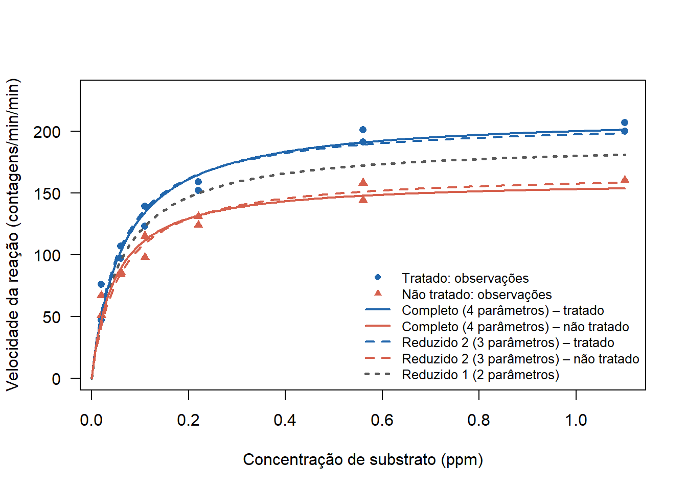
O teste F compara a redução na soma de quadrados dos resíduos obtida ao liberar parâmetros adicionais com a variabilidade residual do modelo completo. A rejeição de \(H_0\) indica que as restrições impostas pelo modelo reduzido não são compatíveis com os dados. A não rejeição, por outro lado, significa apenas que a evidência disponível não justifica a complexidade adicional, sem implicar equivalência entre os modelos.
Em regressão não linear, o teste F é aproximado e depende das condições de regularidade e das suposições sobre os erros (independência, normalidade e homogeneidade da variância). Por isso, a análise de diagnóstico dos resíduos continua essencial para validar a comparação.
O ajuste de modelos de regressão não linear envolve etapas que vão além da estimação dos parâmetros. Desde a escolha da forma funcional e dos valores iniciais até a avaliação da qualidade do ajuste, cada etapa contribui para a construção de um modelo que seja estatisticamente consistente e coerente com o comportamento do fenômeno estudado. A Tabela 8.1 sintetiza as principais etapas discutidas neste e-book.
| Etapa | Objetivo |
|---|---|
| Especificação da forma funcional | Definir uma função que represente a relação entre a resposta e as variáveis explicativas. |
| Definição dos valores iniciais | Fornecer valores plausíveis para iniciar o processo iterativo de estimação. |
| Estimação dos parâmetros | Obter estimativas por meio da minimização da soma de quadrados dos resíduos. |
| Inferência | Quantificar a incerteza das estimativas e realizar testes e intervalos de confiança. |
| Diagnóstico do modelo | Avaliar a adequação do ajuste e verificar as suposições estabelecidas para os erros. |
| Comparação de modelos | Comparar modelos candidatos por meio de medidas de qualidade do ajuste. |
Essas etapas não devem ser entendidas como uma sequência estritamente linear. Resultados obtidos durante o ajuste e o diagnóstico podem indicar a necessidade de revisar decisões anteriores, como alterar valores iniciais, reconsiderar a forma funcional ou testar modelos alternativos. Em todo o processo, a interpretação dos parâmetros e o conhecimento sobre o fenômeno devem ser considerados conjuntamente com os critérios estatísticos, garantindo que o modelo final seja não apenas bem ajustado, mas também significativo do ponto de vista prático.
BATES, D. M.; WATTS, D. G. Nonlinear regression analysis and its applications. New York: Wiley, 1988.
JAMES, G.; WITTEN, D.; HASTIE, T.; TIBSHIRANI, R. An introduction to statistical learning: with applications in R. New York: Springer, 2013.
MAZUCHELI, J.; ACHCAR, J. Algumas considerações em regressão não linear. Acta Scientiarum : Technology, v. 24, 2002. 10.4025/actascitechnol.v24i0.2551.
MICHAELIS, L.; MENTEN, M. Die kinetik der invertinwirkung. Biochemische zeiturg, v. 49, p. 333–369, 1913.
RITZ, C.; STREIBIG, J. C. Nonlinear regression with R. New York: Springer, 2008.
SEBER, G. A. F.; WILD, C. J. Nonlinear regression. New Jersey: John Wiley & Sons, Inc., Hoboken, 2003.
VENABLES, W.; RIPLEY, B. Modern applied statistics with S. Springer New York, 2013.
ZEVIANI, W.M.; RIBEIRO JÚNIOR, P.J.; BONAT, W.H. Modelos de regressão não linear. Campina Grande: RBRAS; SEAGRO, 2013. Apostila do \(58^{\circ}\) RBRAS e \(15^{\circ}\) SEAGRO. Disponível em: http://www.leg.ufpr.br/walmes/mrnl2013.